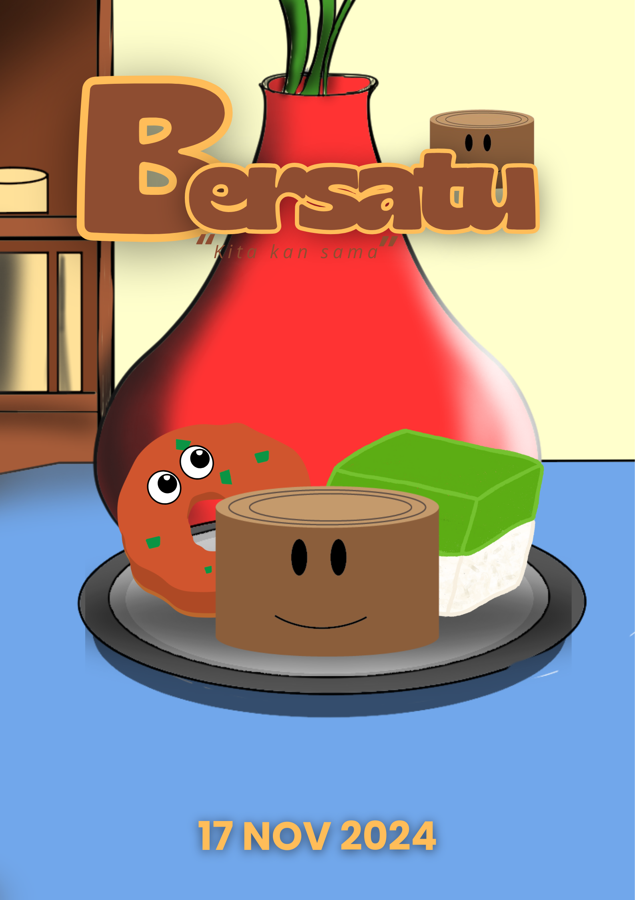
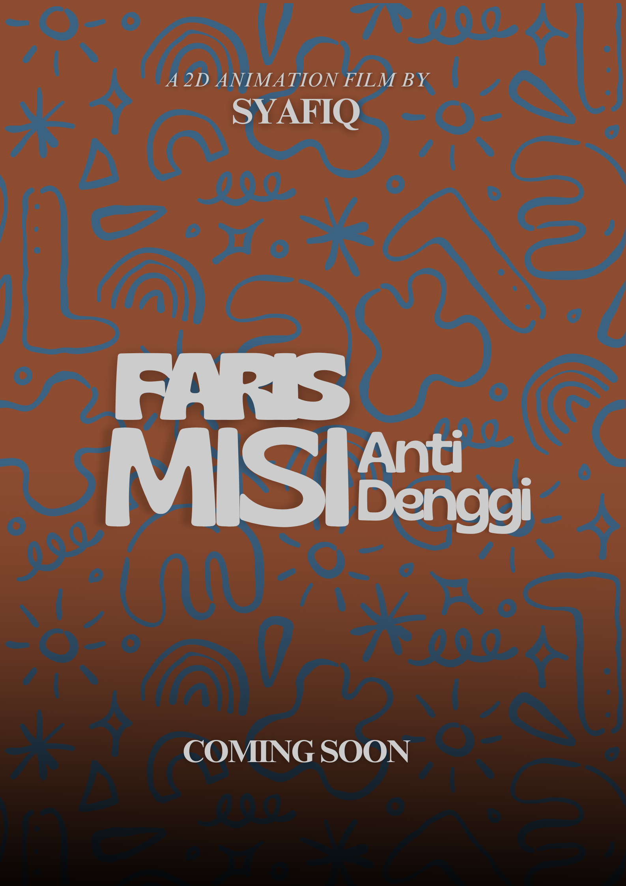
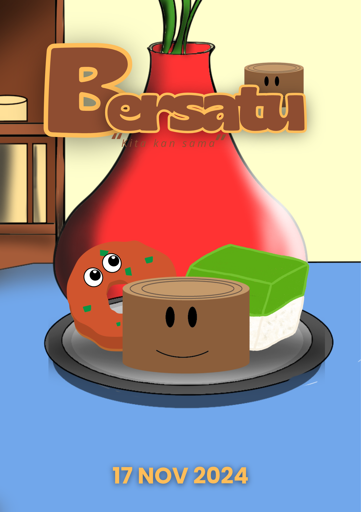
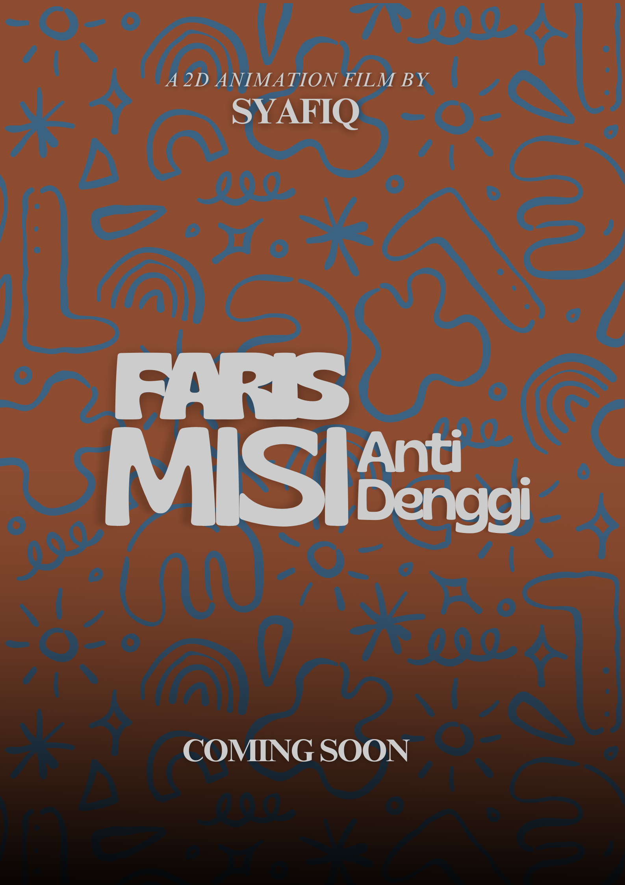

Portfolio / Memori Rindu
Memori Rindu
Overview
Memori Rindu is an emotional short about nostalgia and family. I focused on shot planning, animation polish, lighting, and color mood to support the storytelling beats.
- LookDev & lighting for evening interiors
- Camera blocking and shot continuity
- Render passes and compositing in After Effects
Key Stills
 



Polytechnic Work Gallery
Some snapshots from my work during my time at Politeknik Ibrahim Sultan:
Process
- Story & Boards — Drafted beats, emotional arc, and transitions.
- Blocking — Established camera angles, timing, and silhouettes.
- Spline & Polish — Clean arcs, secondary motion, and facial poses.
- Lighting & Color — Warm evening palette for nostalgia; rim lights for focus.
- Compositing — Grain, bloom, and subtle vignette to unify renders.
Credits
- Director
- Mohamad Syafiq dan Mohamad Syafiq Shahdan
- Animation
- Mohamad Syafiq dan Mohamad Syafiq Shahdan
- Music/SFX
- Capcut Audio Libary
- Software
- Autodesk Maya, Adobe After Effects and Animate